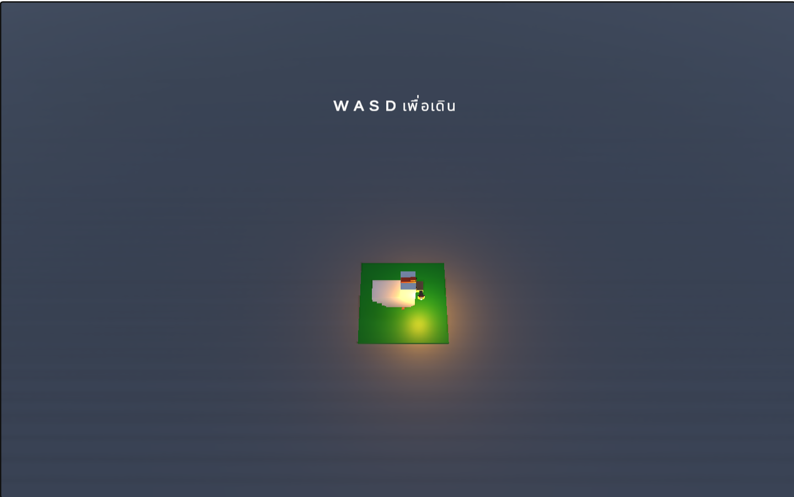
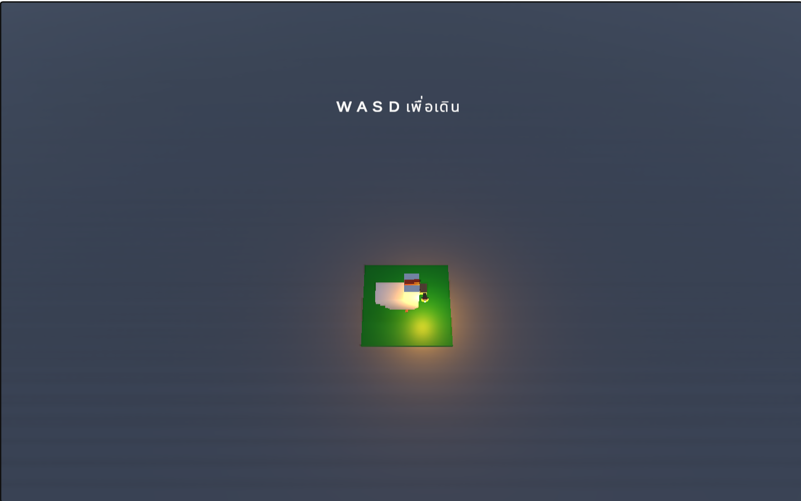

Dungeons Of Shadow
Type: Unity Game Development
Platform: PC Only
This project is a Unity game that implements an algorithm to generate a maze for players to explore.
My roles: I was responsible for developing the game mechanics, including all game systems, maze generation, player movement, enemy AI, and boss battles.
Technologies Used:
- Unity Engine
- Blender
Features:
- 3D Maze generation
- Enemy AI
- Boss battles
 


Note: This project is PC-only, but a WebGL demo is available. You can try it using the button below:
Try Demo ← Back to Home